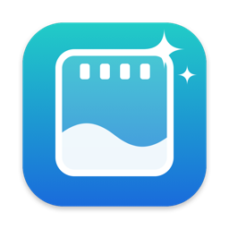

Finde, was deine SSD füllt · See what fills your SSD
Fragen, Fehler oder Wünsche? Schreib mir an tidyssd@icloud.com – ich antworte in der Regel innerhalb weniger Tage.
Die App braucht einmalig Zugriff auf deinen Benutzerordner. Öffne in der Menüleiste Tidy SSD → Einrichtung … und klicke bei „Zugriff auf deinen Benutzerordner“ auf Ordner freigeben …. Wähle dort deinen Benutzerordner (das Haus-Symbol mit deinem Namen).
Tidy SSD legt Ausgewähltes nur in den Papierkorb. Erst wenn du den Papierkorb im Finder leerst, wird der Platz frei. Bis dahin kannst du alles zurücklegen.
Einträge, die gerade benutzt werden oder in deinen Konfigurationen und Projekten verknüpft sind, lassen sich nicht auswählen. Eigene Ausnahmen setzt du per Rechtsklick → Immer behalten.
Rechtsklick auf den Schreibtisch → Widgets bearbeiten … → nach „Tidy SSD“ suchen und hinziehen. Das Widget ist optional.
Die Warnschwelle stellst du im Aufräum-Fenster über das Uhr-Symbol ein. Kommen keine Mitteilungen, prüfe Systemeinstellungen → Mitteilungen → Tidy SSD.
Questions, bugs or ideas? Email me at tidyssd@icloud.com – I usually reply within a few days.
The app needs one-time access to your home folder. In the menu bar, open Tidy SSD → Setup… and click Grant Folder Access… next to “Access to Your Home Folder”. Choose your home folder (the house icon with your name).
Tidy SSD only moves selected items to the Trash. Space is freed once you empty the Trash in Finder. Until then you can put everything back.
Items that are in use or referenced in your configs and projects can't be selected. Add your own exceptions with right-click → Always Keep.
Right-click the desktop → Edit Widgets… → search for “Tidy SSD” and drag it out. The widget is optional.
Set the warning threshold with the clock icon in the clean-up window. If no notifications arrive, check System Settings → Notifications → Tidy SSD.